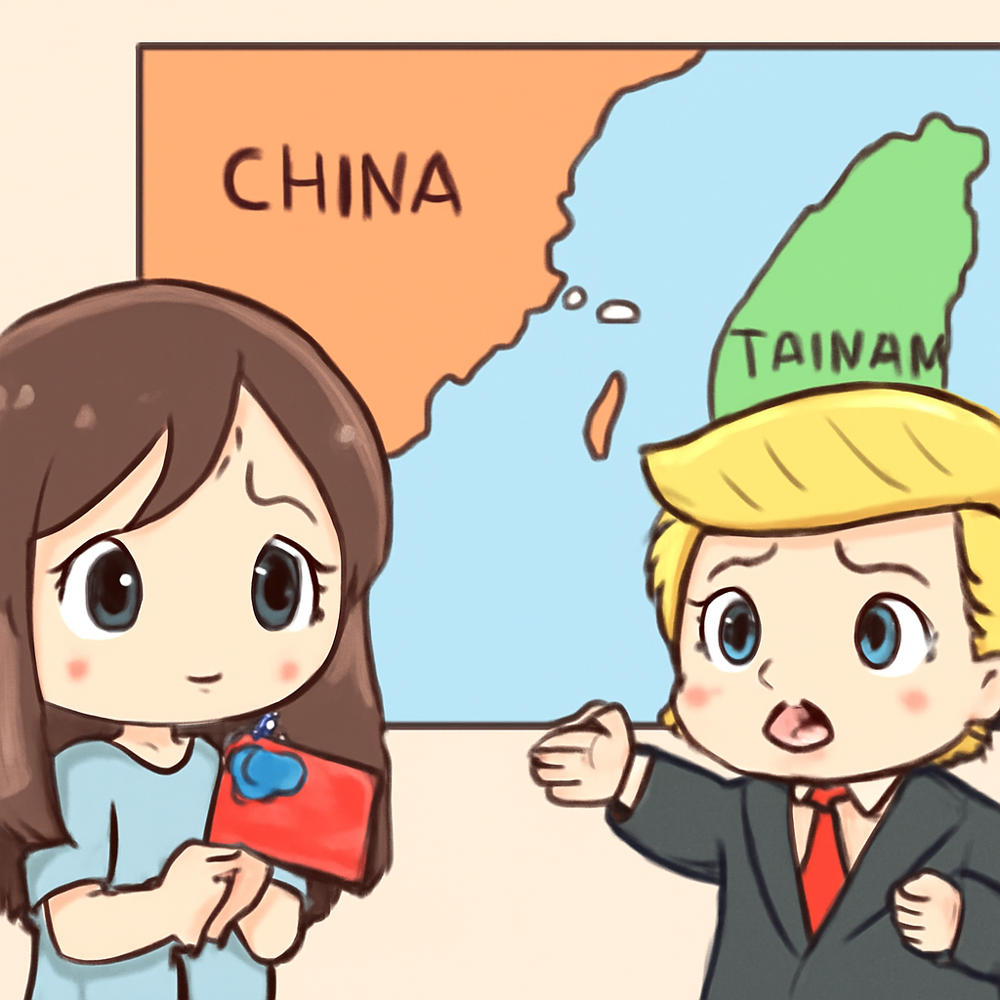
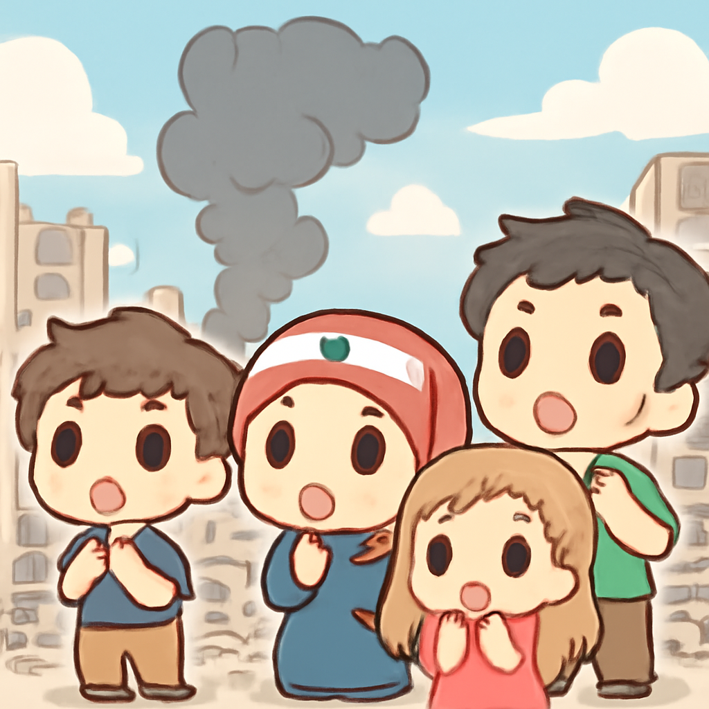

其一 · 美國華府 · 特朗普警告台灣勿宣布獨立
美國總統呼籲北京與台北降溫緊張關係。

在華府，特朗普於高峰會後表示，希望北京和台北能冷靜處理緊張局勢，特別是在台灣問題上。這一言論引發外界關注，因為台灣的未來牽動著國際局勢，特別是美中關係。特朗普似乎在努力平衡美國的立場，希望避免局勢進一步惡化。希望這樣的呼籲能讓各方稍微放鬆些。
🔗 原始新聞 ↗
2026-05-16 · 以古觀今，以笑抗愁
美國總統呼籲北京與台北降溫緊張關係。

在華府，特朗普於高峰會後表示，希望北京和台北能冷靜處理緊張局勢，特別是在台灣問題上。這一言論引發外界關注，因為台灣的未來牽動著國際局勢，特別是美中關係。特朗普似乎在努力平衡美國的立場，希望避免局勢進一步惡化。希望這樣的呼籲能讓各方稍微放鬆些。
🔗 原始新聞 ↗
兩位領導人會面，卻未能達成貿易突破。
在北京，特朗普與習近平結束了為期兩天的會議，儘管儀式感十足，卻沒有達成太多具體的貿易協議。這場會議被形容為“非常成功”，但外界對未來的經濟合作仍持觀望態度。看來，這場會議更多的是展示友好而非實質進展，希望下次能有更多實際成果，讓我們的荷包也跟著鼓起來！
🔗 原始新聞 ↗
以色列空襲後，黎巴嫩境內再傳衝突。

在黎巴嫩，最近的以色列空襲造成六人死亡，這一事件使得本已緊張的局勢更加惡化。儘管美國上個月宣布了停火，但以色列與真主黨之間的攻擊仍在持續。這場衝突不僅影響了當地居民的生活，也危及到區域的穩定，讓整個中東的局勢變得更加複雜。希望和平能早日回到這片土地。
🔗 原始新聞 ↗
基輔遭俄軍攻擊，傷亡慘重。
在烏克蘭基輔，最近的俄羅斯空襲造成24人喪生，其中包括一名12歲的小女孩。這場攻擊再次突顯了持續衝突對平民的影響，讓人心痛不已。隨著戰爭的持續，烏克蘭人民的生活更加艱難，也讓國際社會對人道主義的呼聲更加高漲。希望在不久的將來，他們能迎來和平。
🔗 原始新聞 ↗
剛果宣布爆發大規模埃博拉疫情，數十人死亡。
在剛果，一場大規模的埃博拉疫情被宣布，當地健康專家正努力控制疫情擴散。據報導，已有數十人喪生，且感染人數不斷上升。這一疫情讓人感到憂心，因為隨著時間推移，疫情帶來的風險只會增加。希望當地政府和國際社會能迅速採取行動，阻止這场疫情的蔓延。
🔗 原始新聞 ↗